Lo que encontrarás en el documento
Fechas clave
En estas notas de presentación se repasa lo que necesitas saber mientras te preparas para el lanzamiento, tanto si estás construyendo tu equipo Football Ultimate, desarrollando tu Pro, gestionando tu club o jugando con amigos en The Grounds.
Football Ultimate Team™
Según los comentarios, en FC 27 se adopta un enfoque actualizado sobre cómo se construye y progresa tu Football Ultimate Team™. El documento centra el cambio en tres ideas: más opciones sobre cómo construyes tu club, preservar lo que hace únicos a los jugadores y hacer que cada partido ayude a que tu Club avance.
Más control sobre cómo construyes tu club
Una proporción significativamente mayor de las recompensas de Objetivos, modos de juego y otras áreas de FUT será intercambiable. El objetivo es darte más flexibilidad con el Mercado de Transferencias, las Evoluciones, el Pase Premium y las incorporaciones futuras.
Recompensas de Fichas de Champions
Las Fichas de Champions regresan para permitirte elegir entre diferentes opciones de recompensa. La Tienda de Fichas incluye recompensas específicas de Champions, jugadores del Equipo de la Semana con diseño de Artículo Rojo, Evoluciones y recompensas cosméticas.
Jugador de la Comunidad TOTW
Durante la Temporada 1, la comunidad de FC ayudará a decidir la selección de un artículo de jugador en cada uno de los primeros seis equipos del Equipo de la Semana. La votación comienza cada martes y se cierra cada lunes a las 23:59 PT.
Equilibrio de sobres y tienda en el lanzamiento
Desde el lanzamiento habrá menos ofertas promocionales de Sobres y límites de usuario más bajos en ciertas ofertas. La intención es que jugar siga siendo la principal forma de construir tu plantilla.
Actualizaciones de Rareza y Sobres
Se elimina la distinción entre jugadores Comunes y Raros. Los nombres y la estructura de los Sobres se actualizan con una nomenclatura más consistente y términos como Mini, Pequeño, Grande, Jumbo y Gigante.
Artículos de jugador significativos, impacto duradero
SBC, recompensas de modo, Evoluciones y Mercado de Transferencias ofrecerán distintos caminos. La progresión de Artículos será más gradual, con menos Campañas, plantillas más pequeñas, mejoras más específicas, un máximo de tres Estilos de Juego+ y todos los Roles++ de su posición desbloqueados en los Artículos de Campaña.
Evoluciones y Cambios de Química
Las Evoluciones siguen siendo una vía clave para personalizar la plantilla, aunque con menor frecuencia. Los ICONOS mantienen Química completa en posición y aportan +1 Liga a todas las Ligas; su aportación de Nación pasa de +2 a +1. Los Héroes mantienen +1 Nación y pasan a aportar +1 Liga.
ICONOS, Héroes y Salón de FUT™
Los ICONOS Base empiezan ahora en 88 VG. El Salón de FUT es una nueva categoría para jugadores cuyo impacto en EA SPORTS FC y FUT los hizo inolvidables. Los Artículos Base del Salón de FUT estarán disponibles mediante la Tienda de Fichas y sus versiones especiales aparecerán en Sobres más adelante.
Cada partido te ayuda a construir tu club
Se aumentan significativamente las Monedas FUT ganadas tras los partidos en Rivales, Champions y Batallas de Escuadras. También se ganan entre 15 y 100 Puntos de Temporada por partido elegible, hasta un máximo de 850 al día.
Nuevas formas de utilizar y ganar artículos
Los Artículos Holográficos pueden aparecer como Holográfico Regular hasta 87 VG y Holográfico Prístino desde 88 VG. Las SBC optimizadas permiten aportar artículos elegibles hacia una puntuación objetivo a través de varias entregas. La Galería convierte colecciones y el historial de Artículos en otra vía de progreso, con más de 100 Colecciones disponibles en el lanzamiento.
Temporada 1: novedades y contenido de lanzamiento
La Temporada 1: Ones to Watch estará activa del jueves 17 de septiembre de 2026 al jueves 22 de octubre de 2026. Durante el Acceso Anticipado se incluyen Equipo de la Semana 1 y 2, SBC temáticas de Ones to Watch, SBC de Desafío y Mejora, Evoluciones, Cimientos de Plantilla y oportunidades para ganar Puntos de Temporada.
Ones to Watch
Los Artículos de Ones to Watch con 83 VG o más conservan sus Atributos de Artículo Base; los inferiores se mejoran a 83. Todos tienen al menos 60 de Ritmo y todos sus Roles++ en su posición. Pueden recibir +1 VG por Equipo de la Semana, Actuación Destacada o Jugador del Mes, además de un +1 VG único si el club gana tres de sus siguientes seis partidos de liga doméstica.
Destinados a la Gloria
El 25 de septiembre se centra en jugadores votados para tener un impacto importante durante la temporada futbolística. La primera tanda incluye a Kylian Mbappé, Morgan Rogers, Matheus Fernandes, Alexander Isak y Bryan Mbeumo.
The Grounds
Disponible en PlayStation 5, Xbox Series X|S, Nintendo Switch 2 y PC, The Grounds es el nuevo hogar de los Clubes en EA SPORTS FC™ 27. Regresan Liga, Playoff y Rush, junto con nuevas formas de competir con tus compañeros de Club.
Arquetipos
Los Arquetipos siguen siendo el corazón de cómo construyes y perfeccionas a tu Pro. En calle o estadio se gana AXP y Monedas de The Grounds. Los Torneos de Club y los Playoffs ofrecen mayores recompensas, mientras que los Objetivos añaden Artículos Cosméticos, Consumibles de AXP y Monedas de The Grounds.
Contenido de The Grounds de la Temporada 1
European Nights lleva el ambiente de la UEFA Champions League a The Grounds, con un entorno al atardecer, eventos y un Torneo de Club de Estadio 11 contra 11. Screaming Grounds introduce el ambiente de Halloween, objetivos con forma de calabaza y cosméticos temáticos. Las tiendas ofrecen ropa urbana rotativa inspirada en el fútbol, EA SPORTS FC™, la música y la cultura local de cada Distrito.
Modo Carrera
Manager Live regresa con nuevos Desafíos desde el lanzamiento, Desafíos Impulsados por la Comunidad e ICONOS para desbloquear y usar a lo largo del Modo Carrera.
Manager Live
- Astucia en el Mercado: comienza tu Temporada con un beneficio inteligente en la ventana de traspasos inicial.
- Comienzo Ganador: mantente invicto en las primeras semanas y gana al menos tres partidos.
- Líder en Navidad: lidera tu liga cuando llegue la Navidad.
- El Ascenso de Rio: haz que la temporada 2026/27 sea la temporada en la que Rio Ngumoha se consagre como una superestrella en Anfield.
Desafíos de Creadores
Una de las novedades es la posibilidad de crear tus propios Desafíos y compartirlos con amigos. A lo largo de FC 27 aparecerán nuevos escenarios e historias, incluidos Desafíos impulsados por la Comunidad.
ICONOS en Carrera de Jugador y Carrera de Entrenador
Los ICONOS volverán a formar parte de la experiencia del Modo Carrera. La Temporada 1 contará, entre otros, con Kaká, Antonio Di Natale, Alessandro Del Piero, Raúl y Robin van Persie.
PDF completo, página por página
Las páginas originales se muestran debajo en el mismo orden del documento, conservando el contenido visual original.
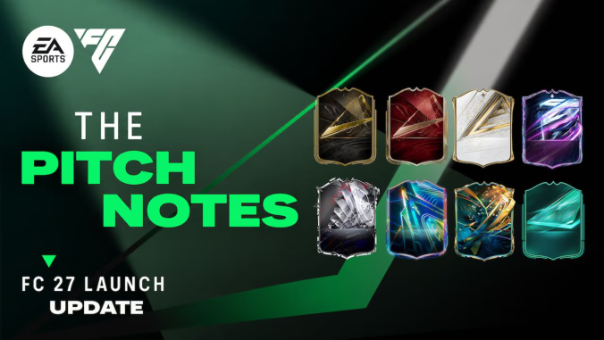
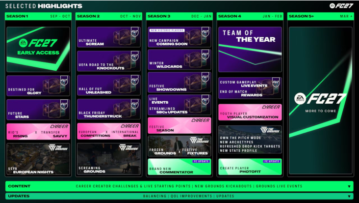
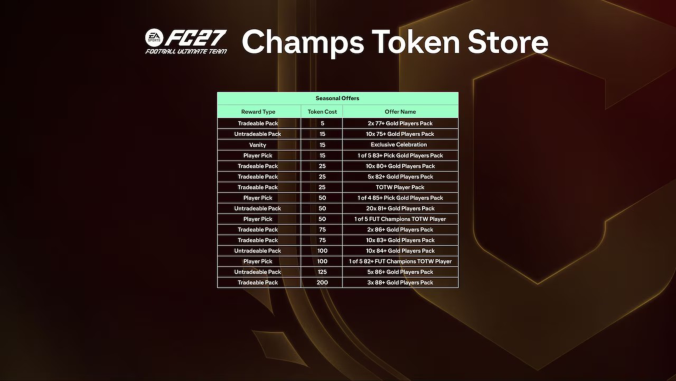
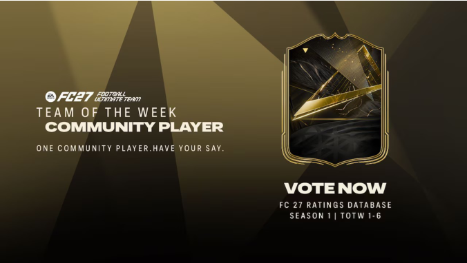
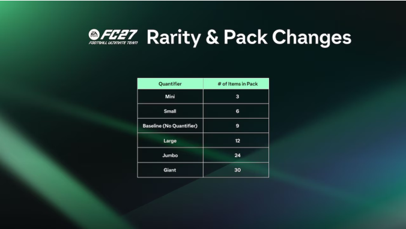
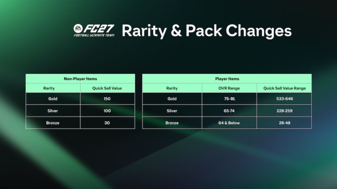
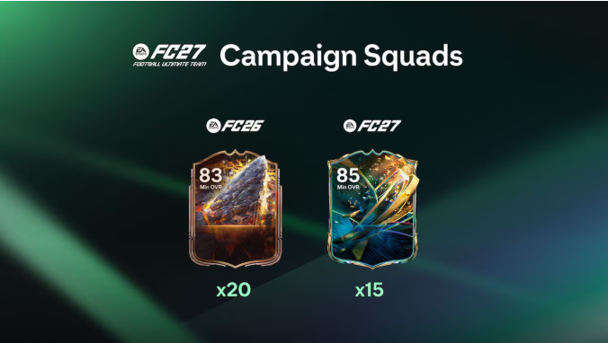
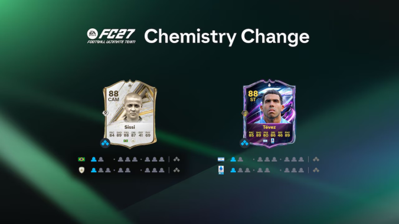
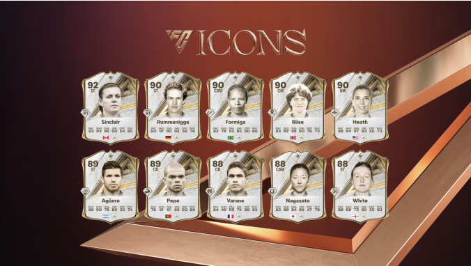
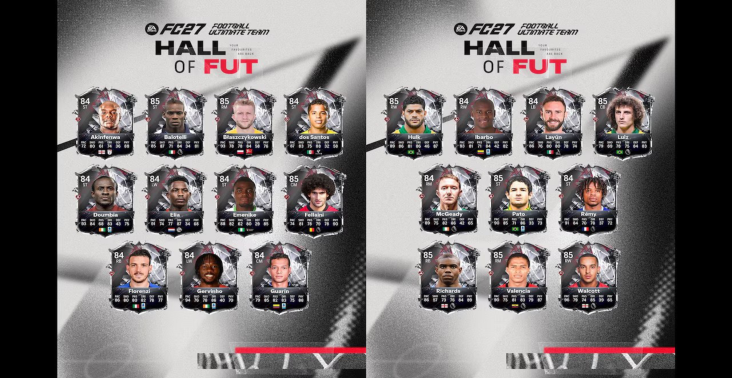
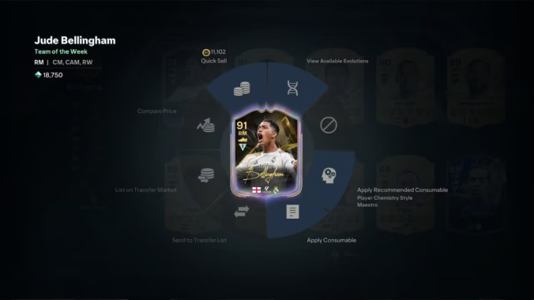